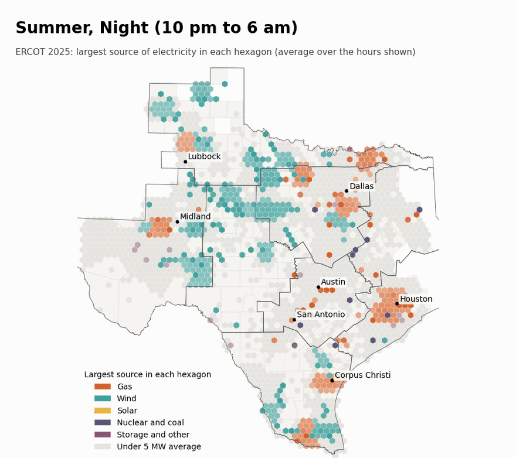
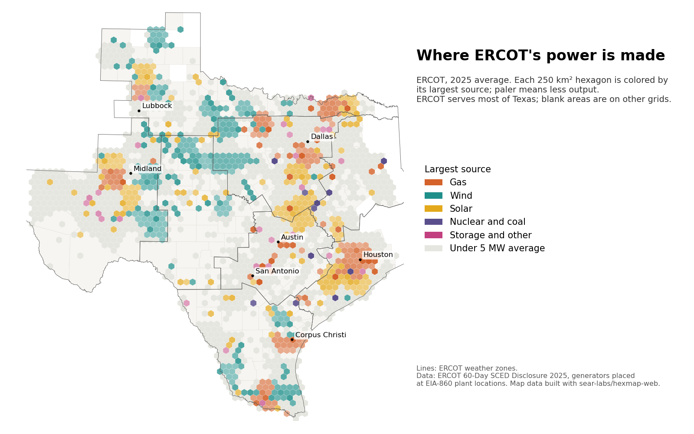

Texas Grid Dashboard
How location and time of day shape which Texas power plants run, what electricity costs, and where batteries would help most.
- Active
- 2023–present
- ERCOT
- Electricity markets
- Energy storage
- Geospatial analysis

In plain English
Most of Texas runs on its own power grid, managed by ERCOT. Where and when electricity is made matters. Wind in West Texas blows hardest at night, solar peaks at midday, and gas plants near the big cities fill in the evening. Prices also differ from place to place and hour to hour. This project asks how location, time of day and season shape which kinds of generation run, what price results, and what that means for where battery storage should go.
The work began as a student dashboard of ERCOT demand, generation and prices. It now assembles ERCOT's public records for every generator and every hour of the year, places each one at its power plant, and maps output, demand and net flow on equal-area hexagons that can be switched by season and time of day. The maps are built with the lab's open-source hexmap-web library. A paper is in revision, and results will be shared once it is published.
Main points
- Assembles a full year of ERCOT's public generator records, hour by hour, and checks them against ERCOT's published demand.
- Places each generator at its plant using federal (EIA-860) plant locations, so output can be mapped rather than reported only by zone.
- Separates the effect of where a plant is from when it runs, for both the mix of generation and the price of power.
- Applies the analysis to a practical decision: which parts of the Texas grid would gain most from new battery storage.
- Documents pitfalls in ERCOT's public files, such as hour-ending timestamps, truncated downloads and format changes, so others can reuse the data correctly.

Interactive demoThe Texas grid →
Papers, code and materials
People
- Erick C. Jones Jr., PhD, PEPrincipal Investigator · SEAR Lab directorin
- Hritik PatilStudent researcher; author of the draft paper (2025–2026)
- Ankith Reddy AvulaStudent researcher; built the 2024 dashboard and poster
Earlier contributors listed; any current team to be added from the lab personnel sheet. Profiles marked in link to LinkedIn. More past and present lab members are on the SEAR Lab team page.